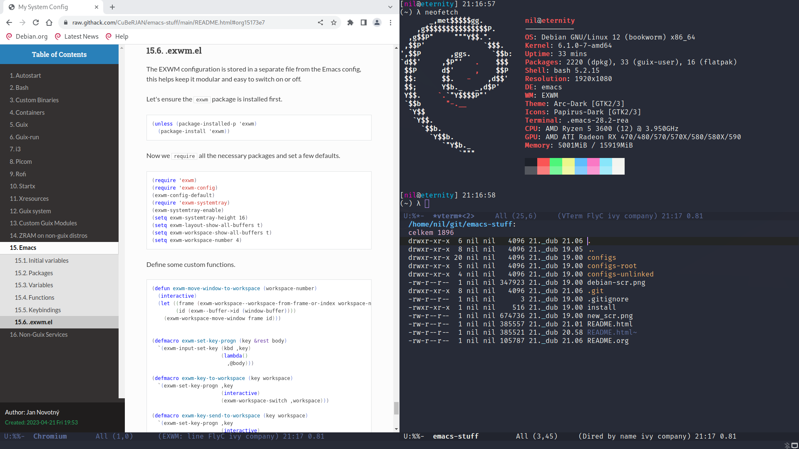
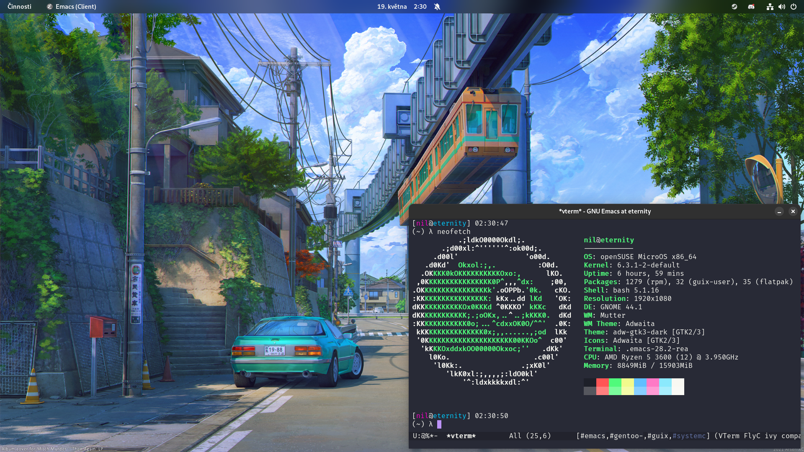

My System Config
Table of Contents
- 1. Introduction
- 2. Autostart
- 3. Bash
- 4. Custom Binaries
- 5. Containers
- 6. Dictionaries
- 7. Debian Dependencies
- 8. Firefox
- 9. Fonts
- 10. Gtk
- 11. Guix
- 12. Guix-run
- 13. Throttled
- 14. Sway
- 15. Icons
- 16. Rofi
- 17. Startx
- 18. Xresources
- 19. XFCE 4 Terminal
- 20. Wallpapers
- 21. Guix system
- 22. Custom Guix Modules
- 23. ZRAM on non-guix distros
- 24. Emacs
- 25. Non-Guix Services and dependencies
Click here for a properly formatted HTML version :)
Debian with EXWM

Debian with MATE

openSUSE Aeon with Gnome

All of these are different flavors of this configuration.
1. Introduction
This is my highly modular and entirely literate full-system configuration.
Let's talk about the implementation first - how I handle it and why.
1.1. The why
There are multiple important ideas in place here.
Reproducibility
I should be able to deploy this configuration quickly and easily, achieving an identical (= reasonably close to identical) result every time. Most importantly all of the relevant dotfiles should be present and should be set up in a way that allows them to work when deployed anywhere. Every file that is relevant to reproducing this configuration should be present. To ensure this is the case I sometimes try to set up my environment in a virtual machine so that I can check if I missed any important files.
Separation
The user environment should exist almost entirely separately from the system environment.
Modularity
I should be able to easily pick which parts of the configuration I want to deploy.
Organization
There should be no confusion over how to deploy this system, nor should there be any confusion over where individual files belong, etc. All files should have their own clearly defined place.
Maintainability
The configuration should be easy to keep current, it should also be robust and reliable.
1.2. The implementation
I'll start by outlining the structure, then I'll go over each step and explain its role.
README.org
The centerpiece of this implementation is the README.org file. This file includes all of the plaintext dotfiles that are part of this system, as well as information about every other file.
Using org to describe these files allows for the configuration to remain readable and properly organized. Each chapter in this file corresponds to a single "module" (more on these below).
This org file is then tangled into the configs directory, where the individual files are placed into separate directories, or as I called them above, "modules".
Modules
Each module is a group of files that fulfill a certain role.
These modules should be self-reliant and shouldn't depend on other modules. In practice there are a few exceptions - for example some modules rely on the guix module to ship dependencies.
Non-plaintext modules are also present in the configs directory. These aren't tangled but are still described in the org file.
These are mostly things that cannot be defined in plaintext such as fonts, icons, wallpapers and similar.
All of these modules are symlinked into the home directory using GNU Stow. Using the modules in this way allows picking out specific parts of the configuration.
Packages
The GNU Guix package manager is used for installing dependencies. This means the dependencies for this environment can be installed anywhere where Guix can run, further separating the user environment from the rest of the system and ensuring better reliability.
Deployment
- Make sure to tangle this file with
org-babel-tangleto actually apply changes made to plaintext files. - Install Guix and run a
guix pullbefore importing Guix package manifests. - The guix manifest providing the bare minimum dependencies is part of the
guixmodule and can be installed withguix package -m $HOME/.guix-manifest-tiny - The configuration itself is placed in
~/git/emacs-stuff/configsand~/git/emacs-stuff/configs-rootFrom there individual modules can be installed:
cd ./configs stow $module -t $HOME cd ..
Or all at once, overwriting existing:
cd ./configs stow * -t $HOME --adopt cd .. git reset --hard
- The
configs-rootdirectory contains system environment modules. Please ensure the permissions are set correctly.- These files should be linked into the root filesystem (
/) instead of$HOME.
- These files should be linked into the root filesystem (
2. Autostart
Here I store my relevant autostart scripts.
2.1. .config/autostart/autostart.desktop
First we need to add a .desktop file for the DE to load.
[Desktop Entry] Type=Application Name=loginctl Exec=/home/nil/.loginctl Comment=Run loginctl script on login X-GNOME-Autostart-enabled=true
2.2. .loginctl
Here's the actual autostart script.
For some reason Xwayland won't automatically read my Xresources, so I ensure they are read manually.
xrdb ~/git/emacs-stuff/configs/X/.Xresources
I use Syncthing to sync my org agenda between different devices.
#syncthing serve --no-browser &
Having an Emacs daemon means instant startup times for emacsclient.
# $HOME/.local/bin/emacs --daemon & emacs --daemon &
These are only necessary when using a standalone window manager.
# nm-applet & # xhost +si:localuser:nil # $HOME/.guix-profile/libexec/xdg-desktop-portal -r & dbus-update-activation-environment --all & # xinput set-prop 'pointer:Logitech G305' 'libinput Accel Profile Enabled' 0 1 & # /usr/bin/gnome-keyring-daemon --start --components=secrets & # playerctld &
These are commands specifically only used when on my laptop.
if [ "$HOSTNAME" = "lainpad" ] then sudo /opt/throttled/start.sh & blueman-applet & setxkbmap cz -option 'ctrl:swapcaps' & xinput set-prop 'pointer:Logitech G305' 'Device Accel Profile' -1 & fi
3. Bash
Let's move on to configuring the shell - bash in my case.
3.1. .bashrc
I like to have a function to clear old guix builds by regex, helps keep the amount of garbage down.
clean_build () { # clear guix build by regex if [[ $1 ]]; then CLEAR_BUILD_PATHS="$(ls --color=never -d /gnu/store/$1 | tr '\n' ' ')" else echo "no regex specified" return 1 fi if [[ $(echo "$CLEAR_BUILD_PATHS" | wc -c) -ne 1 ]]; then guix gc --delete $CLEAR_BUILD_PATHS else echo "no match for regex found" return 1 fi }
A small bit used to remind me when I'm inside a Guix environment.
if [ -n "$GUIX_ENVIRONMENT" ]; then if [[ $PS1 =~ (.*)"\\$" ]]; then PS1="${BASH_REMATCH[1]} [env]\\\$ " fi fi
Set up the prompt with fancy colors and a cute lambda.
In case tput (part of ncurses) isn't available an alternative is provided.
if [[ $- == *i* ]] then _GREEN=$(tput setaf 2) _MAGENTA=$(tput setaf 207) _BLUE=$(tput setaf 4) _RED=$(tput setaf 1) _CYAN=$(tput setaf 45) _RESET=$(tput sgr0) _BOLD=$(tput bold) # _GREEN="\e[0;32m" # _MAGENTA="\e[0;35m" # _BLUE="\e[0;34m" # _RED="\e[0;31m" # _CYAN="\e[0;36m" # _RESET="\e[0m" # _BOLD="\e[1m" # export LD_LIBRARY_PATH=$LIBRARY_PATH export PS1="[${_MAGENTA}\u${_RESET}@${_CYAN}\h${_RESET}] \t\n(\w) λ " fi
Guix needs to be separately sourced in non-container interactive shells.
if [ ! -f /.dockerenv ] && [ ! -f /run/.containerenv ] && [ -d "$HOME/.guix-profile" ] && [[ $- == *i* ]]; then GUIX_PROFILE="$HOME/.guix-profile" . "$GUIX_PROFILE/etc/profile" GUIX_PROFILE="$HOME/.config/guix/current" . "$GUIX_PROFILE/etc/profile" fi
Add some aliases.
The ld_libs is useful for exporting Guix's libraries to run precompiled software.
alias sudo="sudo -p \"[sudo] what's youw p-pa-password, Nil-chan?~ ❤️ \" " # alias apt="nala" alias ls="ls --color" alias ld_libs="export LD_LIBRARY_PATH=\$LIBRARY_PATH" alias tf="xrandr --output HDMI-A-1 --set TearFree" alias hyfetch="hyfetch --ascii-file ~/git/neofetch-logo" alias deb="xhost +si:localuser:nil && distrobox enter debian --" alias glibc="bwrap --bind /var/chroots/debian / --dev /dev --proc /proc --bind /sys /sys --ro-bind /sys/dev/char /sys/dev/char --ro-bind /sys/devices/pci0000:00 /sys/devices/pci0000:00 --bind /run /run --bind /home /home --ro-bind /dev/dri /dev/dri --ro-bind /etc/resolv.conf /etc/resolv.conf --ro-bind /etc/passwd /etc/passwd --ro-bind /etc/group /etc/group" alias glibc-root="doas chroot /var/chroots/debian /bin/bash"
Finally some variable exports - for Guix and Flatpak and a silly sudo prompt.
export XDG_DATA_DIRS="/var/lib/flatpak/exports/share:$HOME/.local/share/flatpak/exports/share:$XDG_DATA_DIRS" export GUIX_PACKAGE_PATH="/etc/guix-modules" export SUDO_PROMPT='[sudo] what'\''s youw p-pa-password, Nil-chan?~ ❤️ '
3.2. .bash profile
Let's move onto the bash profile, used in login shells.
First run the bashrc if necessary.
# Honor per-interactive-shell startup file if [ -f ~/.bashrc ]; then . ~/.bashrc; fi export LANG=cs_CZ.utf-8 export PATH=$PATH:$HOME/.local/bin:$HOME/.bin:$HOME/.py/bin:/usr/lib/go-1.21/bin
Then we can go ahead and export Guix, but only when not inside a container. I also verify the Guix profile exists before trying to load it.
if [ ! -f /.dockerenv ] && [ ! -f /run/.containerenv ] && [ -d "$HOME/.guix-profile" ]; then # source "$HOME/.guix-profile/etc/profile" # source "$HOME/.config/guix/current/etc/profile" export PATH="$PATH:$HOME/.guix-profile/bin" export XDG_DATA_DIRS="$XDG_DATA_DIRS:$HOME/.guix-profile/share" export GUIX_LOCPATH="$HOME/.guix-profile/lib/locale" # export GUIX_SANDBOX_EXTRA_SHARES="/mnt/media/nil/external/Steam" fi
This makes sway start up automatically when logging into tty2, eliminating the need for a login manager.
if [[ "$(tty)" == "/dev/tty2" ]] then export XDG_CURRENT_DESKTOP=sway exec dbus-run-session -- sway fi
Laptop-specific environment variables to ensure hardware video acceleration works.
if [[ "$HOSTNAME" = "lainpad" ]] then export LIBVA_DRIVER_NAME=iHD export LD_PRELOAD=/home/nil/.guix-profile/lib/dri/iHD_drv_video.so fi
4. Custom Binaries
Here I have some custom binaries, mostly scripts and stuff.
4.1. .bin/scr
Just a screenshot shortcut.
grim - | wl-copy
4.2. .bin/scr-area
…And the same but for a selected area.
grim -g "$(slurp)" - | wl-copy
4.3. .bin/chromium-incognito
And a shortcut for opening chromium in incognito mode.
chromium --incognito
5. Containers
I use distrobox docker/podman (depending on which is available, podman is prefered) on my installation. Here is some necessary configs for the containers.
5.1. .config/containers/policy.json
This isn't super secure.
{ "default": [ { "type": "insecureAcceptAnything" } ], "transports": { "docker-daemon": { "": [{"type":"insecureAcceptAnything"}] } } }
5.2. .config/containers/registries.conf
Add the necessary registries.
# Copied from https://raw.githubusercontent.com/projectatomic/registries/master/registries.fedora [registries.search] registries = ['docker.io', 'registry.fedoraproject.org', 'registry.access.redhat.com'] [registries.insecure] registries = [] # Docker only [registries.block] registries = []
6. Dictionaries
This module provides the Czech hunspell dictionary since it currently isn't available in Guix. The files were taken from the LibreOffice dictionaries repository.
7. Debian Dependencies
My long distrohopping journey has eventually landed me on Debian, which is the system I choose to run nowadays.
In order to simplify deploying my configuration on new Debian installations I've decided to add a simple list of apt-installable dependencies.
sudo apt install xinput git stow gcc sbcl guile-3.0 libtool-bin clang cmake make libenchant-2-dev
Emacs is installed separately from the backports.
sudo apt install emacs -t bookworm-backports
8. Firefox
This module provides my Firefox configuration. For tree style tab it's necessary to import $HOME/.mozilla/firefox/default/treestyletab.css.
9. Fonts
This module provides the necessary fonts.
10. Gtk
This module provides straightforward GTK3 configuration.
[Settings] gtk-cursor-theme-name=Simp1e-Adw gtk-icon-theme-name=Papirus-Dark gtk-theme-name=Dracula gtk-font-name=Noto Sans 10 gtk-application-prefer-dark-theme=1
This adds a bit of padding to the XFCE terminal.
VteTerminal, vte-terminal { padding: 8px; }
11. Guix
This module depends on the guix-modules module for certain package definitions!
GNU Guix is a very important part of my configuration.
11.1. .guix-manifest
Just a straightforward (and very messy!) package manifest. I have decided to keep this as a separate file rather than tangle it. This allows me to use guix package --export-manifest to update it.
11.2. .guix-manifest-tiny
Due to the above manifest becoming rather bloated a minimal replacement is provided here. This includes only the necessary dependencies to get the system running correctly.
(specifications->manifest (list "glibc-locales" "gcc" "syncthing" "sbcl" "guile" "cmake" "make" "emacs" "hunspell-dict-en-us" "enchant"))
11.3. .config/guix/channels.scm
Here is the setup for channels, additions here are nonguix and guix-gaming-channels.
(use-modules (guix ci)) (cons* (channel-with-substitutes-available %default-guix-channel "https://ci.guix.gnu.org") (channel (name 'nonguix) (url "https://gitlab.com/nonguix/nonguix") ;; Enable signature verification: (introduction (make-channel-introduction "897c1a470da759236cc11798f4e0a5f7d4d59fbc" (openpgp-fingerprint "2A39 3FFF 68F4 EF7A 3D29 12AF 6F51 20A0 22FB B2D5")))) (channel (name 'guix-gaming-games) (url "https://gitlab.com/guix-gaming-channels/games.git") ;; Enable signature verification: (introduction (make-channel-introduction "c23d64f1b8cc086659f8781b27ab6c7314c5cca5" (openpgp-fingerprint "50F3 3E2E 5B0C 3D90 0424 ABE8 9BDC F497 A4BB CC7F")))) %default-channels)
Custom sudoers file. Added the ability to execute throttled script without entering password.
11.4. etc/sudoers-my
root ALL=(ALL) ALL %wheel ALL=(ALL) ALL %wheel ALL=(ALL) NOPASSWD:/opt/throttled/start.sh
12. Guix-run
guix-run is a tiny script I originally found on Github. Unfortunately I do not have the original link anymore.
12.1. .bin/guix-run
export LD_LIBRARY_PATH=$LIBRARY_PATH RUNNER=$(find ~/.guix-profile/lib/ -name 'ld-linux-*.so*') $RUNNER "$@" #!/bin/sh export LD_LIBRARY_PATH=$LIBRARY_PATH RUNNER
13. Throttled
throttled is a small Python utility, used to fix throttling issues affecting a few certain laptop models with a particular Intel CPU. Since it isn't packaged for Guix, I use a bit of a workaround to make it work.
13.1. opt/throttled/start.sh
sudo guix shell gcc-toolchain pkg-config cairo gobject-introspection dbus -- /opt/throttled/venv/bin/python /opt/throttled/throttled.py --config /home/nil/conf/throttled.conf
13.2. conf/throttled.conf
[GENERAL] # Enable or disable the script execution Enabled: True # SYSFS path for checking if the system is running on AC power Sysfs_Power_Path: /sys/class/power_supply/AC*/online # Auto reload config on changes Autoreload: True ## Settings to apply while connected to Battery power [BATTERY] # Update the registers every this many seconds Update_Rate_s: 30 # Max package power for time window #1 PL1_Tdp_W: 29 # Time window #1 duration PL1_Duration_s: 28 # Max package power for time window #2 PL2_Tdp_W: 44 # Time window #2 duration PL2_Duration_S: 0.002 # Max allowed temperature before throttling Trip_Temp_C: 85 # Set cTDP to normal=0, down=1 or up=2 (EXPERIMENTAL) cTDP: 0 # Disable BDPROCHOT (EXPERIMENTAL) Disable_BDPROCHOT: False ## Settings to apply while connected to AC power [AC] # Update the registers every this many seconds Update_Rate_s: 5 # Max package power for time window #1 PL1_Tdp_W: 44 # Time window #1 duration PL1_Duration_s: 28 # Max package power for time window #2 PL2_Tdp_W: 44 # Time window #2 duration PL2_Duration_S: 0.002 # Max allowed temperature before throttling Trip_Temp_C: 90 # Set HWP energy performance hints to 'performance' on high load (EXPERIMENTAL) # Uncomment only if you really want to use it # HWP_Mode: False # Set cTDP to normal=0, down=1 or up=2 (EXPERIMENTAL) cTDP: 0 # Disable BDPROCHOT (EXPERIMENTAL) Disable_BDPROCHOT: False # All voltage values are expressed in mV and *MUST* be negative (i.e. undervolt)! [UNDERVOLT.BATTERY] # CPU core voltage offset (mV) CORE: 0 # Integrated GPU voltage offset (mV) GPU: 0 # CPU cache voltage offset (mV) CACHE: 0 # System Agent voltage offset (mV) UNCORE: 0 # Analog I/O voltage offset (mV) ANALOGIO: 0 # All voltage values are expressed in mV and *MUST* be negative (i.e. undervolt)! [UNDERVOLT.AC] # CPU core voltage offset (mV) CORE: 0 # Integrated GPU voltage offset (mV) GPU: 0 # CPU cache voltage offset (mV) CACHE: 0 # System Agent voltage offset (mV) UNCORE: 0 # Analog I/O voltage offset (mV) ANALOGIO: 0 # [ICCMAX.AC] # # CPU core max current (A) # CORE: # # Integrated GPU max current (A) # GPU: # # CPU cache max current (A) # CACHE: # [ICCMAX.BATTERY] # # CPU core max current (A) # CORE: # # Integrated GPU max current (A) # GPU: # # CPU cache max current (A) # CACHE:
14. Sway
Sway is one of the window managers I have a full setup for. While I do usually prefer to use a DE or EXWM, I do have sway here for completeness.
14.1. .config/sway/config
Set some initial variables first.
set $mod Mod4 set $HOME /home/nil #set $term emacsclient -c -e "(let ((current-prefix-arg '(4))) (call-interactively 'vterm))" set $term xfce4-terminal # set $files emacsclient -c -e '(dired "~")' set $files thunar set $wallpaper $HOME/.local/share/wallpapers/deijurj-adfa3118-4bd6-4350-b9db-43d4d835536c.jpg set $lock swaylock -i $wallpaper set $scr_off swaymsg "output * dpms off" set $scr_on swaymsg "output * dpms on" font pango:Fira Code 9 gaps inner 8px for_window [class="^.*"] border pixel 2 floating_modifier $mod seat seat0 xcursor_theme Breeze_Snow # tiling_drag modifier titlebar
Configure input.
input * { xkb_layout "cz" xkb_options "ctrl:swapcaps" accel_profile flat xkb_numlock enabled }
Window rules for transparency, etc.
for_window [app_id="thunar"] opacity 0.96
I decrease the time to render a frame as much as possible (12ms in this case), this significantly helps eliminate input lag. This value needs to be increased if stuttering becomes an issue.
output HDMI-A-2 max_render_time 12 output HDMI-A-1 disable # swaymsg -t get_outputs
Execute the startup environment, this is necessary for XDG autostart files.
exec dbus-update-activation-environment DISPLAY WAYLAND_DISPLAY SWAYSOCK exec --no-startup-id $HOME/.loginctl exec --no-startup-id swaybg -i $wallpaper exec --no-startup-id gsettings set org.gnome.desktop.interface gtk-theme Dracula exec --no-startup-id gsettings set org.gnome.desktop.interface icon-theme Papirus-Dark # exec /usr/libexec/polkit-gnome-authentication-agent-1
Configure swaylock to start automatically.
exec --no-startup-id swayidle timeout 480 '$lock' timeout 600 '$scr_off' resume '$scr_on'
Now assigning some keybindings; all of these are rather self-explanatory.
set $refresh_i3status killall -SIGUSR1 i3status bindsym XF86AudioRaiseVolume exec --no-startup-id pamixer -i 10 bindsym XF86AudioLowerVolume exec --no-startup-id pamixer -d 10 bindsym XF86AudioMute exec --no-startup-id pamixer -t bindsym XF86AudioMicMute exec --no-startup-id pactl set-source-mute @DEFAULT_SOURCE@ toggle bindsym Print exec --no-startup-id $HOME/.bin/scr bindsym Shift+Print exec --no-startup-id $HOME/.bin/scr-area bindsym $mod+Return exec $term bindsym $mod+q kill bindsym $mod+Shift+Control+l exec --no-startup-id $lock bindsym $mod+d exec --no-startup-id rofi -theme ~/.config/wofi/nord.rasi -show drun bindsym $mod+b exec --no-startup-id rofi -theme ~/.config/wofi/nord.rasi -show window bindsym $mod+e exec --no-startup-id emacsclient -c bindsym $mod+a exec --no-startup-id $files
Window focus:
bindsym $mod+h focus left bindsym $mod+j focus down bindsym $mod+k focus up bindsym $mod+l focus right bindsym Mod1+Tab focus right bindsym Mod1+Shift+Tab focus left bindsym $mod+Left focus left bindsym $mod+Down focus down bindsym $mod+Up focus up bindsym $mod+Right focus right
Moving and resizing windows:
bindsym $mod+m sticky toggle bindsym $mod+Shift+h move left bindsym $mod+Shift+j move down bindsym $mod+Shift+k move up bindsym $mod+Shift+l move right bindsym $mod+Tab move right bindsym $mod+Shift+Tab move left bindsym $mod+Shift+Left move left bindsym $mod+Shift+Down move down bindsym $mod+Shift+Up move up bindsym $mod+Shift+Right move right bindsym $mod+Control+h resize shrink width 2 px or 2 ppt bindsym $mod+Control+j resize grow height 2 px or 2 ppt bindsym $mod+Control+k resize shrink height 2 px or 2 ppt bindsym $mod+Control+l resize grow width 2 px or 2 ppt
Splitting and layouts:
bindsym $mod+v split h bindsym $mod+c split v bindsym $mod+s split toggle bindsym $mod+f fullscreen toggle bindsym $mod+Shift+s layout stacking bindsym $mod+w layout tabbed bindsym $mod+y layout toggle split bindsym $mod+Shift+space floating toggle bindsym $mod+space focus mode_toggle bindsym $mod+Shift+x focus parent bindsym $mod+x focus child
Next set some workspace names and bindings.
set $ws1 "1:λ" set $ws2 "2:α" set $ws3 "3:β" set $ws4 "4:γ" set $ws5 "5:δ" set $ws6 "6:ε" set $ws7 "7:ζ" set $ws8 "8:η" set $ws9 "9:θ" set $ws10 "10:ι" # switch to workspace bindsym $mod+plus workspace $ws1 bindsym $mod+ecaron workspace $ws2 bindsym $mod+scaron workspace $ws3 bindsym $mod+ccaron workspace $ws4 bindsym $mod+rcaron workspace $ws5 bindsym $mod+zcaron workspace $ws6 bindsym $mod+yacute workspace $ws7 bindsym $mod+aacute workspace $ws8 bindsym $mod+iacute workspace $ws9 bindsym $mod+eacute workspace $ws10 # move focused container to workspace bindsym $mod+Shift+plus move container to workspace $ws1 bindsym $mod+Shift+ecaron move container to workspace $ws2 bindsym $mod+Shift+scaron move container to workspace $ws3 bindsym $mod+Shift+ccaron move container to workspace $ws4 bindsym $mod+Shift+rcaron move container to workspace $ws5 bindsym $mod+Shift+zcaron move container to workspace $ws6 bindsym $mod+Shift+yacute move container to workspace $ws7 bindsym $mod+Shift+aacute move container to workspace $ws8 bindsym $mod+Shift+iacute move container to workspace $ws9 bindsym $mod+Shift+eacute move container to workspace $ws10
Now for session commands:
bindsym $mod+Shift+r reload # restart sway inplace (preserves your layout/session, can be used to upgrade sway) # leftover from i3, not supported by sway! # bindsym $mod+Control+r restart # exit sway (logs you out of your Wayland session) bindsym $mod+Shift+e exec "swaynag -t warning -m 'You pressed the exit shortcut. Do you really want to exit sway? This will end your Wayland session.' -B 'Yes, exit sway' 'swaymsg exit'"
Handle colors next; following the Nord colorscheme here.
set $bg-color #b19cd8 set $active-border-color #FFFFFF set $inactive-bg-color #2E3440 set $text-color #f5f5f5 set $inactive-text-color #d8dee9 set $urgent-bg-color #A7C7E7 client.focused $bg-color $bg-color $inactive-bg-color $active-border-color # nice transparent borders for unfocused windows :3 client.unfocused $inactive-bg-color $inactive-bg-color $inactive-text-color $inactive-bg-color #00000000 client.focused_inactive $inactive-bg-color $inactive-bg-color $inactive-text-color $inactive-bg-color client.urgent $urgent-bg-color $urgent-bg-color $text-color $urgent-bg-color client.background #2B2C2B
Configure the sway bar.
bar { #strip_workspace_numbers yes position top mode dock status_padding 4 tray_padding 4
I pipe the status command through a wrapper, which makes extra modifications to the output.
status_command i3status | ~/.config/sway/i3status_wrapper.py
And finally set colors.
colors { background $inactive-bg-color separator $inactive-bg-color # border background text focused_workspace $bg-color $bg-color $inactive-bg-color inactive_workspace $inactive-bg-color $inactive-bg-color $inactive-text-color urgent_workspace $urgent-bg-color $urgent-bg-color $inactive-bg-color } }
14.2. .config/sway/i3status wrapper.py
This small python wrapper adds the currently playing song as a prefix to the status.
import json import subprocess import sys def get_status(): status = subprocess.getoutput('playerctl status') if 'Playing' in status: return "▶️" elif 'Paused' in status: return "⏸️" elif 'Stopped' in status: return "⏹️" else: return "" def get_current_music_title(): title = subprocess.getoutput('playerctl metadata title') if 'No players found' in title: return "" artist = subprocess.getoutput('playerctl metadata artist') status = get_status() return f"{status} {artist} - {title}" def print_line(message): """ Non-buffered printing to stdout. """ sys.stdout.write(message + '\n') sys.stdout.flush() def read_line(): """ Interrupted respecting reader for stdin. """ # try reading a line, removing any extra whitespace try: line = sys.stdin.readline().strip() # i3status sends EOF, or an empty line if not line: sys.exit(3) return line # exit on ctrl-c except KeyboardInterrupt: sys.exit() if __name__ == '__main__': # Skip the first line which contains the version header. print_line(read_line()) # The second line contains the start of the infinite array. print_line(read_line()) while True: line, prefix = read_line(), '' # ignore comma at start of lines if line.startswith(','): line, prefix = line[1:], ',' j = json.loads(line) music_title = get_current_music_title() # this is where the magic happens # https://i3wm.org/docs/i3bar-protocol.html j.insert(0, { # 'background': '#FFFFFF', 'full_text': '%s' % music_title, 'color': '#b19cd8', 'name': 'music_title', 'separator_block_width': 0}) j.insert(1, { # 'background': '#FFFFFF', 'full_text': ' || ', 'color': '#FFFFFF', 'name': 'separator', 'separator_block_width': 0}) print_line(prefix+json.dumps(j))
14.3. .config/i3status/config
This is the actual i3status config.
Let's set some colors first of all.
general { output_format = "i3bar" colors = true color_good = "#a3be8c" color_degraded = "#ebcb8b" color_bad = "#bf616a" interval = 1 }
Now set the order of the items.
order += "ethernet _first_" order += separator order += "volume master" order += separator order += "tztime local"
And configure the individual items.
volume master { format = "|| 🔊 %volume" format_muted = "|| 🔇 (%volume)" device = "default" mixer = "Master" } wireless _first_ { format_up = "W: (%quality at %essid) %ip" format_down = "W: down" } ethernet _first_ { format_up = "🌏 %ip" format_down = "🚫 net down" } battery all { format = "%status %percentage %remaining" } disk "/" { format = "%avail" } load { format = "%1min" } memory { format = "%used | %available" threshold_degraded = "1G" format_degraded = "MEMORY < %available" } tztime local { format = "|| 🗓️ %H:%M %d.%m.%Y" }
15. Icons
This modules provides custom icons.
16. Rofi
Wofi is an application launcher, I use it with sway and sometimes even with different desktop environments.
16.1. .config/wofi/nord.rasi
This is my chosen wofi theme, fits with the sway theme! Original source here.
* { font: "Fira Code 10"; nord0: #2e3440; nord1: #3b4252; nord2: #434c5e; nord3: #4c566a; nord4: #d8dee9; nord5: #e5e9f0; nord6: #eceff4; nord7: #8fbcbb; nord8: #b19cd8; /* purple-ish thingy */ nord9: #81a1c1; nord10: #5e81ac; nord11: #bf616a; nord12: #d08770; nord13: #ebcb8b; nord14: #a3be8c; nord15: #b48ead; background-color: transparent; text-color: @nord4; accent-color: @nord8; margin: 0px; padding: 0px; spacing: 0px; } window { location: north; width: 100%; background-color: @nord0; children: [ mainbox,message ]; } mainbox { orientation: horizontal; children: [ inputbar,listview ]; } inputbar { width: 25%; padding: 1px 8px; spacing: 8px; children: [ prompt, entry ]; } prompt, entry, element-text, element-icon { vertical-align: 0.5; } prompt { text-color: @accent-color; } listview { layout: horizontal; } element { padding: 1px 8px; spacing: 4px; } element normal urgent { text-color: @nord13; } element normal active { text-color: @accent-color; } element selected { text-color: @nord0; } element selected normal { background-color: @accent-color; } element selected urgent { background-color: @nord13; } element selected active { background-color: @nord8; } element-icon { size: 0.75em; } element-text { text-color: inherit; }
17. Startx
This bit is for a custom startx command, made to work with Guix.
17.1. .startx
DIR=$HOME/.guix-profile $DIR/bin/xinit -- $DIR/bin/Xorg :0 vt1 -keeptty \ -configdir $DIR/share/X11/xorg.conf.d \ -modulepath $DIR/lib/xorg/modules
18. Xresources
Here I apply some basic Xorg configuration.
18.1. .Xresources
Just set the DPI and configure basic font rendering.
Xft.antialias: true Xft.autohint: false Xft.dpi: 96 Xft.hinting: true Xft.hintstyle: hintslight Xft.lcdfilter: lcddefault Xft.rgba: rgb Emacs.Background: black
18.2. .xsessionrc
This here is necessary for Debian; makes Guix programs accessible from a desktop session.
export PATH="$PATH:$HOME/.guix-profile/bin:/var/lib/flatpak/exports/bin:$HOME/.bin" export XDG_DATA_DIRS="$XDG_DATA_DIRS:$HOME/.guix-profile/share"
19. XFCE 4 Terminal
xfce4-terminal is my chosen terminal emulator. It's very easy to get up and running and supports all the basic features I need.
20. Wallpapers
This module provides a few nice wallpapers I like to use. The path to these wallpapers is $HOME/.local/share/wallpapers.
21. Guix system
Here is my Guix system configuration, currently unused as I'm on Debian, yet always ready to deploy!
21.1. /etc/config.scm
Let's start by adding my custom modules. This isn't exactly clean but it is functional.
(add-to-load-path "/etc/guix-modules")
Now import the actual modules
(use-modules (gnu) (gnu services) (gnu services dbus) (gnu services pm) (gnu packages gnome) (nongnu packages linux) (nongnu system linux-initrd) (gnu services virtualization) (gnu services shepherd) (gnu services admin) (guix channels) (gnu services mcron) (gnu services docker) (gnu packages wm) (nil services mount-rshared) (nil services virsh) (nil packages gnome) (gnu packages gnome) (gnu packages fonts) (gnu packages networking) (guix gexp) (guix packages) (srfi srfi-1)) (use-service-modules linux desktop networking ssh xorg) (use-package-modules linux package-management)
Now redefine some services. Enable nonguix substitutes and blueman for a bluetooth applet.
(define %my-services (modify-services %desktop-services (guix-service-type config => (guix-configuration (inherit config) (substitute-urls (append (list "https://substitutes.nonguix.org") %default-substitute-urls)) (authorized-keys (append (list (local-file "./signing-key.pub")) %default-authorized-guix-keys)))) (gdm-service-type config => (gdm-configuration (inherit config) (wayland? #f) (default-user "nil") (auto-login? #t))) (dbus-root-service-type config => (dbus-configuration (inherit config) (services (list libratbag blueman))))))
Let's handle basic OS defaults first of all.
(operating-system (locale "cs_CZ.utf8") (timezone "Europe/Prague") (keyboard-layout (keyboard-layout "cz")) (host-name "lainpad") (sudoers-file (local-file "./sudoers-my"))
Now add the necessary firmware from nonguix.
(kernel linux) (initrd microcode-initrd) (firmware (list linux-firmware))
User and group setup is next in line:
(groups (cons* (user-group (name "games")) ;; For libratbagd (user-group (name "realtime")) %base-groups)) (users (cons* (user-account (name "nil") (comment "(lambda () nil)") (group "users") (home-directory "/home/nil") (supplementary-groups '("wheel" "netdev" "audio" "video" "lp" "libvirt" "kvm" "games" "docker" "realtime"))) %base-user-accounts))
Add system-level packages now; these are only the most necessary of packages.
(packages (append (map specification->package (list "bluez" "openssh" "blueman" "i915-firmware" "vim" "xdg-desktop-portal-gtk" "i3lock" "libratbag" "git")) %base-packages))
Now for the second part of service configuration - appending my own services.
(services (append (list (service xfce-desktop-service-type) (service openssh-service-type) ;; Not necessary for Gnome (service screen-locker-service-type (screen-locker-configuration (name "i3lock") (program (file-append i3lock "/bin/i3lock")))) (service tlp-service-type (tlp-configuration (tlp-enable? #t) (cpu-scaling-governor-on-ac (list "performance")) (cpu-scaling-governor-on-bat (list "powersave")) (energy-perf-policy-on-ac "") (cpu-boost-on-ac? #t) (cpu-boost-on-bat? #f) (start-charge-thresh-bat0 70) (stop-charge-thresh-bat0 75) (start-charge-thresh-bat1 70) (stop-charge-thresh-bat1 75))) (service bluetooth-service-type (bluetooth-configuration (auto-enable? #f)))
This one is a custom service, essentially distrobox needs the root (/) to be mounted as rshared and this is currently the way to achieve this.
mount-rshared-service
Another custom service, this one creates the transient default libvirt network.
virsh-net-default-service
PAM limits for Wine Esync and realtime acces for jackd.
(service pam-limits-service-type (list (pam-limits-entry "*" 'hard 'nofile 524288) (pam-limits-entry "@realtime" 'both 'rtprio 99) (pam-limits-entry "@realtime" 'both 'memlock 'unlimited)))
A simple firewall configuration. By default all incoming connections are blocked, except for those on ssh port 22.
(service nftables-service-type)
This is a bit of a work-around… Basically we place the linker where regular binaries expect it to be. This allows us to execute standard binaries more easily.
(extra-special-file "/lib64/ld-linux-x86-64.so.2" (file-append glibc "/lib/ld-linux-x86-64.so.2"))
And the final few services.
(set-xorg-configuration (xorg-configuration (keyboard-layout keyboard-layout))) (service virtlog-service-type (virtlog-configuration (max-clients 1000))) (service libvirt-service-type (libvirt-configuration (unix-sock-group "libvirt") (tls-port "16555"))) (service docker-service-type) (service zram-device-service-type (zram-device-configuration (size "8172M") (compression-algorithm 'zstd)))) %my-services))
At last we can configure hardware-level stuff - bootloader and drives. Finally we can close the operating-system section.
(bootloader (bootloader-configuration (bootloader grub-efi-bootloader) (targets (list "/boot/efi")) (keyboard-layout keyboard-layout))) (mapped-devices (list (mapped-device (source (uuid "52ef5bf4-a41c-4d4c-a67c-f4117ab21102")) (target "cryptroot") (type luks-device-mapping)))) (file-systems (cons* (file-system (mount-point "/boot/efi") (device (uuid "C417-E6C5" 'fat32)) (type "vfat")) (file-system (mount-point "/") (device "/dev/mapper/cryptroot") (type "ext4") (dependencies mapped-devices)) %base-file-systems)))
21.2. /etc/signing-key.pub
This is the key for nonguix.
(public-key (ecc (curve Ed25519) (q #C1FD53E5D4CE971933EC50C9F307AE2171A2D3B52C804642A7A35F84F3A4EA98#) ) )
22. Custom Guix Modules
I use some of my own custom Guix modules. These provide anything from services to (mainly) packages.
22.1. /etc/guix-modules/nil/packages
Let's start with the packages first.
22.1.1. brogue.scm
(define-module (nil packages brogue) #:use-module (guix packages) #:use-module (guix download) #:use-module (guix build-system gnu) #:use-module (guix licenses) #:use-module (guix gexp) #:use-module (gnu packages sdl)) (define-public brogue-ce (package (name "brogue-ce") (version "1.12") (source (origin (method url-fetch) (uri (string-append "https://github.com/tmewett/BrogueCE/archive/refs/tags/v" version ".tar.gz")) (sha256 (base32 "0a6l7j91iq0mv7zrxnlxx6ll5rfwvgfyk5h1gc9m5qzll1n3zvdf")))) (build-system gnu-build-system) (arguments (list #:make-flags #~(list "CC=gcc") #:tests? #f #:phases #~(modify-phases %standard-phases (delete 'configure) (add-before 'build 'change-datadir-path (lambda _ (map (lambda (substitutes) (substitute* "config.mk" (((car substitutes)) (cdr substitutes)))) `(("^DATADIR := ." . ,(string-append "DATADIR := " #$output "/share")) ("^RELEASE := NO" . "RELEASE := YES"))))) (replace 'install (lambda _ (mkdir-p (string-append #$output "/bin")) (copy-file "bin/brogue" (string-append #$output "/bin/.brogue_real")) (call-with-output-file (string-append #$output "/bin/brogue") ; Wrap around executable and execute in ~/.local (lambda (file) (format file "~A" (string-append "mkdir -p \"$HOME/.local/share/brogue\" && cd \"$HOME/.local/share/brogue\" && " #$output "/bin/.brogue_real")))) (invoke "chmod" "+x" (string-append #$output "/bin/brogue")) (copy-recursively "bin/assets" (string-append #$output "/share/assets")) (make-desktop-entry-file (string-append #$output "/share/applications/brogue.desktop") #:name "Brogue" #:exec "brogue" #:categories '("RolePlaying" "Game") #:keywords '("adventure" "singleplayer") #:comment '((#f "Brave the Dungeons of Doom!")))))))) (inputs (list (sdl-union (list sdl2 sdl2-image)))) (synopsis "Brogue CE: A dungeon crawler roguelike") (description "Community fork of Brogue") (home-page "https://github.com/tmewett/BrogueCE") (license agpl3)))
22.1.2. distrobox-docker.scm
Since podman isn't currently fully functional on Guix we have to use docker instead. Unfortunately the Distrobox definition in Guix's repos relies on podman, making it practically broken. To solve this issue I modify the package to use docker instead.
(define-module (nil packages distrobox-docker) #:use-module (guix gexp) #:use-module (gnu packages) #:use-module (guix packages) #:use-module (gnu packages docker) #:use-module (guix utils) #:use-module (guix build utils) #:use-module (gnu packages containers)) (define-public distrobox-docker (package (inherit distrobox) (name "distrobox-docker") (inputs (modify-inputs (package-inputs distrobox) (append docker) (append docker-cli) (delete "podman"))) (arguments (substitute-keyword-arguments (package-arguments distrobox) ((#:phases phases) #~(modify-phases #$phases (replace 'wrap-scripts (lambda _ (let ((path (search-path-as-list (list "bin") (list #$(this-package-input "docker") #$(this-package-input "wget"))))) (for-each (lambda (script) (wrap-script (string-append #$output "/bin/distrobox-" script) `("PATH" ":" prefix ,path))) '("assemble" "create" "enter" "ephemeral" "generate-entry" "list" "rm" "stop" "upgrade")))))))))))
22.1.3. emulators.scm
This is a custom retroarch definition, it adds the core downloader functionality which the Guix version doesn't have for licensing reasons.
(define-module (nil packages emulators) #:use-module (ice-9 match) #:use-module (guix gexp) #:use-module (guix packages) #:use-module (guix utils) #:use-module (gnu packages) #:use-module (gnu packages gl) #:use-module (gnu packages linux) #:use-module (gnu packages emulators)) (define-public retroarch-nonfree (package (inherit retroarch) (name "retroarch-nonfree") (inputs (modify-inputs (package-inputs retroarch) (append glu) (append libaio))) (arguments (substitute-keyword-arguments (package-arguments retroarch) ((#:phases phases) #~(modify-phases #$phases (replace 'configure (lambda* (#:key inputs outputs #:allow-other-keys) (let* ((out (assoc-ref outputs "out")) (etc (string-append out "/etc")) (vulkan (assoc-ref inputs "vulkan-loader")) (wayland-protocols (assoc-ref inputs "wayland-protocols"))) ;; Hard-code some store file names. (substitute* "gfx/common/vulkan_common.c" (("libvulkan.so") (string-append vulkan "/lib/libvulkan.so"))) (substitute* "gfx/common/wayland/generate_wayland_protos.sh" (("/usr/local/share/wayland-protocols") (string-append wayland-protocols "/share/wayland-protocols"))) ;; The configure script does not yet accept the extra arguments ;; (like ‘CONFIG_SHELL=’) passed by the default configure phase. (invoke "./configure" (string-append "--prefix=" out) ;; Non-free software are available through the core updater, ;; disable it. See <https://issues.guix.gnu.org/38360>. "--disable-builtinzlib")))) (add-after 'install 'append-extra-libs (lambda* (#:key inputs #:allow-other-keys) (wrap-program (string-append #$output "/bin/retroarch") `("LD_LIBRARY_PATH" ":" prefix (,(string-append #$(this-package-input "glu") "/lib" ":" #$(this-package-input "libaio") "/lib"))))))))))))
22.1.4. gnome.scm
Since the default Gnome package in Guix ships quite a few unnecessary dependencies I make my own variant. I also replace gnome-console with gnome-terminal as it is more full-featured.
(define-module (nil packages gnome) #:use-module (guix utils) #:use-module (guix packages) #:use-module (gnu packages) #:use-module (gnu packages gnome)) (define-public gnome-minimal (package (inherit gnome) (name "gnome-minimal") (propagated-inputs (modify-inputs (package-propagated-inputs gnome) (delete "epiphany") (delete "gnome-weather") (delete "simple-scan") (delete "gnome-maps") (delete "cheese") (delete "gnome-boxes") (delete "gnome-console") (delete "gnome-contacts") (append gnome-terminal)))))
22.2. /etc/guix-modules/nil/services
Moving on to services.
22.2.1. mount-rshared.scm
Tiny service used to remount the root as recursively shared on boot.
(define-module (nil services mount-rshared) #:use-module (guix gexp) #:use-module (gnu packages) #:use-module (guix packages) #:use-module (gnu packages linux) #:use-module (guix utils) #:use-module (gnu services) #:use-module (gnu services shepherd) #:use-module (guix build utils)) (define-public mount-rshared-service (simple-service 'mount-rshared shepherd-root-service-type (list (shepherd-service (provision '(mount-rshared)) (requirement '(user-processes)) (start #~(lambda () (invoke #$(file-append util-linux "/bin/mount") "--make-rshared" "/"))) (respawn? #f)))))
22.2.2. virsh.scm
There doesn't seem to be a proper Guix way to configure libvirt networks so my lazy workaround is to make a service that creates the default transient network.
(define-module (nil services virsh) #:use-module (guix gexp) #:use-module (gnu packages) #:use-module (guix packages) #:use-module (gnu packages virtualization) #:use-module (guix utils) #:use-module (gnu services) #:use-module (gnu services shepherd) #:use-module (guix build utils)) (define default-config " <network> <name>default</name> <bridge name='virbr0'/> <forward/> <ip address='192.168.122.1' netmask='255.255.255.0'> <dhcp> <range start='192.168.122.2' end='192.168.122.254'/> </dhcp> </ip> </network> ") (define-public virsh-net-default-service (let ((config (plain-file "default.xml" default-config))) (simple-service 'virsh-net-default-service shepherd-root-service-type (list (shepherd-service (provision '(virsh-net-default)) (requirement '(libvirtd NetworkManager)) (start #~(lambda () (invoke #$(file-append libvirt "/bin/virsh") "net-create" #$config))) (stop #~(lambda () (invoke #$(file-append libvirt "/bin/virsh") "net-destroy" "default"))) (respawn? #f))))))
23. ZRAM on non-guix distros
This is the distribution-agnostic ZRAM implementation for use with systems other than GNU Guix. This module isn't necessary (or desired) with Guix System.
- Dependent on
systemd. - It is necessary to manually disable regular swap in
/etc/fstab. - It might be necessary to copy the files over rather than symlink them.
23.1. /etc/modules-load.d/zram.conf
First load the kernel module.
zram
23.2. /etc/modprobe.d/zram.conf
Now to configure the module a little bit.
options zram num_devices=1
23.3. /etc/udev/rules.d/99-zram.rules
Set the ZRAM size - 16GB in this case.
KERNEL=="zram0", ATTR{disksize}="16384M",TAG+="systemd"
23.4. /etc/systemd/system/zram.service
Finally we need a systemd service to automatically enable zram on boot.
[Unit] Description=Swap with zram After=multi-user.target [Service] Type=oneshot RemainAfterExit=true ExecStartPre=/sbin/mkswap /dev/zram0 ExecStart=/sbin/swapon /dev/zram0 ExecStop=/sbin/swapoff /dev/zram0 [Install] WantedBy=multi-user.target
24. Emacs
Finally - this is my Emacs config, now fully literate!
It's pretty full-featured, yet rather short and straightforward. I try to keep this config as readable and maintainable as possible
Let's start with a quick listing of the relevant system-level dependencies, these are the names in Guix:
clangripgrepfont-fira-monosbclclangcmakemakeenchanthunspellhunspell-dict-en-uslibtoolgcc-toolchainguile
I usually install these using GNU Guix, at least when running Emacs on Linux.
24.1. Initial variables
Set some basic information about the user.
(setq user-mail-address "shadenk30011@gmail.com" user-full-name "(λ () nil)")
EXWM can be toggled here. Its configuration is handled within a separate file.
(defvar use-exwm nil) (when use-exwm (load "~/.exwm.el"))
24.2. Packages
Next we need to setup our package archives so that we can ensure all the necessary packages are installed. We'll also grab el-patch as it needs to have priority over other packages.
(require 'package) (add-to-list 'package-archives '("melpa" . "https://melpa.org/packages/") t) ;;(add-to-list 'package-archives '("melpa-stable" . "https://stable.melpa.org/packages/") t) (package-initialize) (unless (package-installed-p 'el-patch) (package-install 'el-patch)) (require 'el-patch)
Here is the list of packages to be patched with el-patch.
(dolist (package '(elcord nyan-mode)) (unless (package-installed-p package) (package-install package)))
A small patch needs to be applied before we start setting up packages - the elcord package needs to be patched to work with flatpak Discord.
;; (el-patch-feature elcord) ;; (el-patch-defvar elcord--discord-ipc-pipe "app/com.discordapp.Discord/discord-ipc-0")
(el-patch-feature nyan-mode) (el-patch-defconst nyan-directory (file-name-directory "~/.emacs.d/nyan-custom/img"))
Finally it's time to go over the package list and install everything.
You'll notice the use of a very primitive function - no straight.el or use-package here!
(dolist (package '(dumb-jump company ivy sudo-edit json-mode sly transmission vterm elfeed which-key magit guix systemd spacious-padding jinx toc-org tempel tempel-collection yaml-mode tree-sitter tree-sitter-langs emms lsp-pyright treemacs doom-themes treemacs-all-the-icons markdown-mode impatient-mode ement counsel lsp-mode rainbow-delimiters ligature flycheck leuven-theme geiser go-mode geiser-guile org-present visual-fill-column org-bullets web-mode)) (unless (package-installed-p package) (package-install package)) (require package))
24.3. Extra tempel templates (.emacs.d/templates)
I use tempel for inserting snippets. This is the default path for adding new snippets.
;; ~/.config/emacs/templates org-mode (file "#+TITLE: " p n "#+AUTHOR: " p n "#+SETUPFILE: ~/.org-html.css.org" n "#+OPTIONS: toc:nil num:nil author:nil date:nil timestamp:nil html-postamble:nil") (blog "#+OPTIONS: toc:nil num:nil" n "#+BEGIN_EXPORT html" n "---" n "layout: post" n "title: " p n "permalink: /:title/" n "tags: [emacs]" n "---" n "#+END_EXPORT") ;; Local Variables: ;; mode: lisp-data ;; outline-regexp: "[a-z]" ;; End:
24.4. custom-set options
Now we set some custom variables related mostly to theming. This part here was automatically generated by Emacs.
(custom-set-variables '(column-number-mode t) '(ement-save-sessions t) '(custom-enabled-themes '(doom-dracula)) '(custom-safe-themes '("0cf95236abcf59e05b1ea69b4edd53d293a5baec4fe4c3484543fee99bfd2204" "8c7e832be864674c220f9a9361c851917a93f921fedb7717b1b5ece47690c098" "944d52450c57b7cbba08f9b3d08095eb7a5541b0ecfb3a0a9ecd4a18f3c28948" "631c52620e2953e744f2b56d102eae503017047fb43d65ce028e88ef5846ea3b" "1a1ac598737d0fcdc4dfab3af3d6f46ab2d5048b8e72bc22f50271fd6d393a00" "7ea883b13485f175d3075c72fceab701b5bf76b2076f024da50dff4107d0db25" "37768a79b479684b0756dec7c0fc7652082910c37d8863c35b702db3f16000f8" "ae426fc51c58ade49774264c17e666ea7f681d8cae62570630539be3d06fd964" "fee7287586b17efbfda432f05539b58e86e059e78006ce9237b8732fde991b4c" "bfc0b9c3de0382e452a878a1fb4726e1302bf9da20e69d6ec1cd1d5d82f61e3d" "dde643b0efb339c0de5645a2bc2e8b4176976d5298065b8e6ca45bc4ddf188b7" "bffa9739ce0752a37d9b1eee78fc00ba159748f50dc328af4be661484848e476" "12ce0ae7f9f5ba28e7252d9464daea32aa0884646b6576b949edfb2ccf2bf9d4" "da75eceab6bea9298e04ce5b4b07349f8c02da305734f7c0c8c6af7b5eaa9738" "2dd4951e967990396142ec54d376cced3f135810b2b69920e77103e0bcedfba9" "7a424478cb77a96af2c0f50cfb4e2a88647b3ccca225f8c650ed45b7f50d9525" "6945dadc749ac5cbd47012cad836f92aea9ebec9f504d32fe89a956260773ca4" "aec7b55f2a13307a55517fdf08438863d694550565dee23181d2ebd973ebd6b8" default)) '(delete-selection-mode t) '(org-safe-remote-resources '("\\`https://fniessen\\.github\\.io/org-html-themes/org/theme-readtheorg\\.setup\\'")) '(package-selected-packages '(leuven-theme org-present org-roam web-mode doom-themes vterm sly sudo-edit pacmacs rainbow-mode eglot nord-theme nyan-mode rainbow-delimiters tree-sitter-langs tree-sitter magit treemacs-icons-dired spacemacs-theme treemacs-all-the-icons treemacs guix emms elfeed impatient-mode company-plisp sly-quicklisp ligature markdown-mode ivy flycheck company dumb-jump)) '(safe-local-variable-values '((eval modify-syntax-entry 43 "'") (eval modify-syntax-entry 36 "'") (eval modify-syntax-entry 126 "'"))) '(warning-suppress-types '((comp) (comp) (emacs)))) (custom-set-faces '(ement-room-message-text ((t (:inherit (variable-pitch default))))) '(ement-room-name ((t (:inherit (variable-pitch font-lock-function-name-face))))) '(erc-default-face ((t (:inherit (variable-pitch default))))) '(erc-nick-default-face ((t (:inherit variable-pitch :weight bold)))))
The Fira Code font has ligature support, so we implement it here.
(dolist (char/ligature-re `((?- ,(rx (or (or "-->" "-<<" "->>" "-|" "-~" "-<" "->") (+ "-")))) (?/ ,(rx (or (or "/==" "/=" "/>" "/**" "/*") (+ "/")))) (?* ,(rx (or (or "*>" "*/") (+ "*")))) (?< ,(rx (or (or "<<=" "<<-" "<|||" "<==>" "<!--" "<=>" "<||" "<|>" "<-<" "<==" "<=<" "<-|" "<~>" "<=|" "<~~" "<$>" "<+>" "</>" "<*>" "<->" "<=" "<|" "<:" "<>" "<$" "<-" "<~" "<+" "</" "<*") (+ "<")))) (?: ,(rx (or (or ":?>" "::=" ":>" ":<" ":?" ":=") (+ ":")))) (?= ,(rx (or (or "=>>" "==>" "=/=" "=!=" "=>" "=:=") (+ "=")))) (?! ,(rx (or (or "!==" "!=") (+ "!")))) (?> ,(rx (or (or ">>-" ">>=" ">=>" ">]" ">:" ">-" ">=") (+ ">")))) (?& ,(rx (+ "&"))) (?| ,(rx (or (or "|->" "|||>" "||>" "|=>" "||-" "||=" "|-" "|>" "|]" "|}" "|=") (+ "|")))) (?. ,(rx (or (or ".?" ".=" ".-" "..<") (+ ".")))) (?+ ,(rx (or "+>" (+ "+")))) (?\[ ,(rx (or "[<" "[|"))) (?\{ ,(rx "{|")) (?\? ,(rx (or (or "?." "?=" "?:") (+ "?")))) (?# ,(rx (or (or "#_(" "#[" "#{" "#=" "#!" "#:" "#_" "#?" "#(") (+ "#")))) (?\; ,(rx (+ ";"))) (?_ ,(rx (or "_|_" "__"))) (?~ ,(rx (or "~~>" "~~" "~>" "~-" "~@"))) (?$ ,(rx "$>")) (?^ ,(rx "^=")) (?\] ,(rx "]#")))) (apply (lambda (char ligature-re) (set-char-table-range composition-function-table char `([,ligature-re 0 font-shape-gstring]))) char/ligature-re))
24.5. Variables
It's finally time to set up some basic variables.
(setq ring-bell-function 'ignore) (setq vc-follow-symlinks t) (setq all-the-icons-scale-factor 1.2) (setq confirm-kill-processes nil) (setq kill-buffer-query-functions nil) (treemacs-load-theme "all-the-icons") (menu-bar-mode -1) (tool-bar-mode -1) (scroll-bar-mode -1) (counsel-mode t) (setcdr (assoc 'counsel-M-x ivy-initial-inputs-alist) "") ;; Search by substring ;;(global-tab-line-mode t) (setq inferior-lisp-program "sbcl") (setf nyan-animate-nyancat t) (setf nyan-animation-frame-interval 0.05) (setf nyan-wavy-trail t) (setq-default cursor-type 'bar) (setq geiser-active-implementations '(guile)) (setq geiser-default-implementation 'guile) (defvar my-org-html-export-theme 'leuven)
Background transparency, finally supported since Emacs 29.
(set-frame-parameter nil 'alpha-background 96) (add-to-list 'default-frame-alist '(alpha-background . 96))
Setup up spacious padding.
(setf spacious-padding-widths '(:internal-border-width 8 :right-divider-width 16 :scroll-bar-width 0)) (define-globalized-minor-mode my-global-spacious-padding-mode spacious-padding-mode (lambda () (spacious-padding-mode 1))) (my-global-spacious-padding-mode 1)
Emacsclient requires fonts to be loaded on frame creation instead of daemon start.
(defun load-my-fonts (frame) (select-frame frame) (set-face-attribute 'default nil :font "Fira Code" :weight 'medium :height 120) (set-face-attribute 'fixed-pitch nil :font "Fira Code" :weight 'medium :height 120) (set-face-attribute 'variable-pitch nil :font "Source Sans Pro" :weight 'medium :height 1.1) (set-face-attribute 'company-tooltip nil :font "Fira Code" :weight 'medium :height 120) ;; Make the document title a bit bigger (set-face-attribute 'org-document-title nil :font "Source Sans Pro" :weight 'bold :height 1.3) ;; Make sure certain org faces use the fixed-pitch face when variable-pitch-mode is on (set-face-attribute 'org-block nil :foreground nil :inherit 'fixed-pitch) (set-face-attribute 'org-table nil :inherit 'fixed-pitch) (set-face-attribute 'org-formula nil :inherit 'fixed-pitch) (set-face-attribute 'org-code nil :inherit '(shadow fixed-pitch)) (set-face-attribute 'org-verbatim nil :inherit '(shadow fixed-pitch)) (set-face-attribute 'org-special-keyword nil :inherit '(font-lock-comment-face fixed-pitch)) (set-face-attribute 'org-meta-line nil :inherit '(font-lock-comment-face fixed-pitch)) (set-face-attribute 'org-checkbox nil :inherit 'fixed-pitch)) (if (daemonp) (add-hook 'after-make-frame-functions #'load-my-fonts) (load-my-fonts (selected-frame)))
Some window related stuff; supress opening the welcome screen for buffers opening files.
(when (> (length command-line-args) 1) (setq inhibit-splash-screen t)) (add-to-list 'default-frame-alist '(height . 44)) (add-to-list 'default-frame-alist '(width . 140)) (setq frame-resize-pixelwise t)
Windows has some rather strange encoding issues when UTF-8 isn't explicitly set as the default.
(prefer-coding-system 'utf-8) (set-default-coding-systems 'utf-8) (set-language-environment 'utf-8) (set-selection-coding-system 'utf-8)
Company is used for code completion. Here is a basic setup.
(defun company-complete-common-or-cycle () "Company settings." (interactive) (when (company-manual-begin) (if (eq last-command 'company-complete-common-or-cycle) (let ((company-selection-wrap-around t)) (call-interactively 'company-select-next)) (call-interactively 'company-complete-common)))) (define-key company-active-map [tab] 'company-complete-common-or-cycle) (define-key company-active-map (kbd "TAB") 'company-complete-common-or-cycle) (setq company-insertion-on-trigger 'company-explicit-action-p) (add-hook 'xref-backend-functions #'dumb-jump-xref-activate)
And here we arrive at the global modes.
(global-display-line-numbers-mode -1) (global-prettify-symbols-mode t) (global-company-mode t) (global-flycheck-mode t) (global-jinx-mode t) (which-key-mode t) (ivy-mode t) (global-tree-sitter-mode 1) (electric-pair-mode t) (global-hl-line-mode 1) (desktop-save-mode -1) ;;(elcord-mode) ;(nyan-mode t) (add-hook 'tree-sitter-after-on-hook #'tree-sitter-hl-mode) (add-hook 'scheme-mode-hook 'geiser-mode) (add-hook 'prog-mode-hook #'(lambda () (display-line-numbers-mode t)))
24.6. LSP servers
Set up LSP for supported modes.
C and C++ are really straightforward.
(add-hook 'c-mode-hook #'lsp) (add-hook 'c++-mode-hook #'lsp)
Here I set Python to use a custom venv.
(add-hook 'python-mode-hook (lambda () (require 'lsp-pyright) (lsp-register-custom-settings `(("python.pythonPath" "/home/nil/.py/bin/python"))) (lsp)))
Go requires a bit of simple configuration.
(defun lsp-go-install-save-hooks () (add-hook 'before-save-hook #'lsp-format-buffer t t) (add-hook 'before-save-hook #'lsp-organize-imports t t)) (add-hook 'go-mode-hook (lambda () (lsp-deferred) (lsp-go-install-save-hooks) (setq tab-width 4)))
Impatient mode for Markdown, more about this later.
(add-hook 'markdown-mode-hook #'(lambda () (markdown-impatient-start))) ; Impatient mode live preview
Rainbow delimiters are a life-saver for Lisps!
(add-hook 'prog-mode-hook #'rainbow-delimiters-mode)
I like to have the selected line clearly highlighted.
(set-face-attribute 'hl-line nil :inherit nil :background "gray14") ; use lavender for leuven theme instead
Fix unicode in vterm.
(add-hook 'vterm-mode-hook (lambda () (set-buffer-process-coding-system 'utf-8-unix 'utf-8-unix)))
Add the Guix development environment for Geiser along with the tempel completions.
(with-eval-after-load 'geiser-guile (add-to-list 'geiser-guile-load-path "~/guix") (add-to-list 'geiser-guile-load-path "~/nonguix") (add-to-list 'geiser-guile-load-path "/etc/guix-modules")) (with-eval-after-load 'tempel ;; Ensure tempel-path is a list -- it may also be a string. (unless (listp 'tempel-path) (setq tempel-path (list tempel-path))) (add-to-list 'tempel-path "~/src/guix/etc/snippets/tempel/*"))
Enable languages for the Jinx spell checker.
(setq jinx-languages "en_US cs_CZ")
Set up EMMS playback with MPV.
(require 'emms-setup) (emms-all) (setq emms-player-list '(emms-player-mpv))
Disable annoying keybind suggestions.
(setq suggest-key-bindings nil)
Here is a very minimal setup for org-agenda.
(require 'org) (setq org-log-done t) (setq calendar-week-start-day 1) (add-to-list 'org-agenda-files "~/org/agenda.org")
Automatically tangle config on save, currently disabled.
(defun org-babel-tangle-config () (when (string-equal (buffer-file-name) (expand-file-name "~/git/emacs-stuff/README.org")) (let ((org-config-babel-evaluate nil)) (org-babel-tangle)))) ;; (add-hook 'org-mode-hook ;; (lambda () ;; (add-hook 'after-save-hook #'org-babel-tangle-config)))
Org-mode specific keybindings.
(define-key global-map "\C-ck" 'org-store-link) (define-key global-map "\C-ca" 'org-agenda)
Ensure org-html-export-html switches to the correct theme before exporting - this solves code legibility issues. It's a bit of a flashbang for a couple of seconds though…
(defun my-with-theme (orig-fun &rest args) (load-theme my-org-html-export-theme) (unwind-protect (apply orig-fun args) (disable-theme my-org-html-export-theme))) (with-eval-after-load "ox-html" (advice-add 'org-html-export-to-html :around 'my-with-theme))
Jekyll export setup, I use this for my blog.
(require 'ox-publish) (with-eval-after-load "ox-publish" (advice-add 'org-publish-current-project :around 'my-with-theme)) (setq org-publish-project-alist '(("lambdanil.github.io" ;; Path to org files. :base-directory "~/git/lambdanil.github.io/org" :base-extension "org" ;; Path to Jekyll Posts :publishing-directory "~/git/lambdanil.github.io/_posts/" :recursive t :publishing-function org-html-publish-to-html :headline-levels 4 :html-extension "html" :body-only t)))
Make org-mode a little bit prettier to look at.
(add-hook 'org-mode-hook (lambda () (company-mode -1) (toc-org-mode 1) (org-bullets-mode 1) (setq-local face-remapping-alist '((default variable-pitch default))) (set-face-attribute 'company-tooltip nil :font "Fira Code" :weight 'medium :height 120) (dolist (face '((org-level-1 . 1.3) (org-level-2 . 1.2) (org-level-3 . 1.1) (org-level-4 . 1.05) (org-level-5 . 1.2) (org-level-6 . 1.2) (org-level-7 . 1.2) (org-level-8 . 1.2))) (set-face-attribute (car face) nil :font "Fira Code" :weight 'medium :height (cdr face))))) (require 'org-faces) ;; Hide emphasis markers on formatted text (setq org-hide-emphasis-markers t)
Now for presentations in Emacs using org-present.
(defun my/org-present-start () (setq visual-fill-column-width 160 ; Set the width visual-fill-column-center-text t) (visual-fill-column-mode 1) (org-display-inline-images) (visual-line-mode 1) ; Center text (setq-local face-remapping-alist '((default (:height 1.6) variable-pitch) ; Set font sizes (header-line (:height 4.0) variable-pitch) (org-document-title (:height 1.75) org-document-title) (org-code (:height 1.2) org-code) (org-verbatim (:height 1.2) org-verbatim) (org-block (:height 1.2) org-block) (org-block-begin-line (:height 0.7) org-block)))) (defun my/org-present-end () (visual-fill-column-mode 0) (org-remove-inline-images) (visual-line-mode 0) (setq-local face-remapping-alist '((default variable-pitch default))) (set-face-attribute 'company-tooltip nil :font "Fira Code" :weight 'medium :height 120)) (add-hook 'org-present-mode-hook 'my/org-present-start) (add-hook 'org-present-mode-quit-hook 'my/org-present-end)
This is for keybindings that should never be overwritten by minor modes.
(defvar my/keys-keymap (make-keymap) "Keymap for my/keys-mode.") (define-minor-mode my/keys-mode "Minor mode for my personal keybindings." :init-value t :global t :keymap my/keys-keymap) ;; The keymaps in `emulation-mode-map-alists' take precedence over ;; `minor-mode-map-alist' (add-to-list 'emulation-mode-map-alists `((my/keys-mode . ,my/keys-keymap)))
24.7. Functions
Some straightforward functions here, used to make my Emacs life a little easier.
(defun my-kill-buffer-and-window () "Kill the current buffer and delete the selected window." (interactive) (let ((window-to-delete (selected-window)) (buffer-to-kill (current-buffer)) (delete-window-hook (lambda () (ignore-errors (delete-window))))) (unwind-protect (progn (add-hook 'kill-buffer-hook delete-window-hook t t) (if (kill-buffer (current-buffer)) ;; If `delete-window' failed before, we rerun it to regenerate ;; the error so it can be seen in the echo area. (when (eq (selected-window) window-to-delete) (delete-window))))))) (defun new-vterm () (interactive) (let ((current-prefix-arg '(4))) ;; emulate C-u (call-interactively 'vterm))) (defun dired-open-file () "In Dired, open the file named on this line." (interactive) (let* ((file (dired-get-filename nil t))) (call-process "xdg-open" nil 0 nil file))) (defun insert-above-and-jump () "Insert line above current line." (interactive) (beginning-of-line) (newline-and-indent) (forward-line -1) (indent-according-to-mode)) (defun insert-line-below-and-jump () "Insert line below current line." (interactive) (end-of-line) (newline-and-indent)) (defun my-enlarge-window-horizontally () "Enlarge window horizontally." (interactive) (enlarge-window-horizontally 4)) (defun my-shrink-window-horizontally () "Shrink window horizontally." (interactive) (shrink-window-horizontally 4)) (defun my-erc-channel-search () (interactive) (insert "/msg alis LIST **"))
I use tempel for inserting snippets. This is copied right from their docs!
(defun tempel-setup-capf () (setq-local completion-at-point-functions (cons #'tempel-expand completion-at-point-functions)))
Sometimes I like to take quick notes in Markdown with impatient mode used for a preview feature.
(defun markdown-html (buffer) "Markdown HTML filter, supply BUFFER." (princ (with-current-buffer buffer (format "<!DOCTYPE html><html><title>Impatient Markdown</title><xmp theme=\"united\" style=\"display:none;\"> %s </xmp><script src=\"http://ndossougbe.github.io/strapdown/dist/strapdown.js\"></script></html>" (buffer-substring-no-properties (point-min) (point-max)))) (current-buffer))) (defun markdown-impatient-start () "Start impatient mode with filter." (interactive) (impatient-mode) (httpd-start) (imp-set-user-filter 'markdown-html))
24.8. Keybindings
Finally we get to my extensive custom keybindings. I try to keep these to as few as possible, to avoid forgetting them over time.
(define-key my/keys-keymap (kbd "C-d") 'kill-line) (global-set-key (kbd "C-l") 'forward-char) (define-key my/keys-keymap (kbd "C-h") 'backward-char) (define-key my/keys-keymap (kbd "C-k") 'previous-line) (define-key my/keys-keymap (kbd "C-j") 'next-line) (define-key my/keys-keymap (kbd "M-l") 'forward-word) (define-key my/keys-keymap (kbd "M-h") 'backward-word) (define-key my/keys-keymap (kbd "M-j") 'forward-paragraph) (define-key my/keys-keymap (kbd "M-k") 'backward-paragraph) (define-key my/keys-keymap (kbd "M-c") 'compile) (define-key my/keys-keymap (kbd "C-b") 'ivy-switch-buffer) (define-key my/keys-keymap (kbd "C-p") 'other-window) (define-key my/keys-keymap (kbd "C-o") 'insert-line-above-and-jump) (define-key my/keys-keymap (kbd "C-v") 'set-mark-command) (define-key my/keys-keymap (kbd "<backtab>") 'indent-rigidly) (define-key my/keys-keymap (kbd "C-=") 'indent-region) (define-key my/keys-keymap (kbd "C-§") 'scroll-down-line) (define-key my/keys-keymap (kbd "C-ů") 'scroll-up-line) (define-key my/keys-keymap (kbd "M-ů") #'(lambda () (interactive) (scroll-up 4))) (define-key my/keys-keymap (kbd "M-§") #'(lambda () (interactive) (scroll-down 4))) (define-key my/keys-keymap (kbd "C-x c") #'(lambda () (interactive) (load-file "~/.emacs"))) (define-key my/keys-keymap (kbd "C-c r") 'replace-regexp) (define-key my/keys-keymap (kbd "M-/") 'undo-redo) (define-key my/keys-keymap (kbd "M-/") 'undo-redo) (define-key my/keys-keymap (kbd "C-c n") 'elfeed) (define-key my/keys-keymap (kbd "C-c y") 'yank-from-kill-ring) (define-key my/keys-keymap (kbd "C-c p") 'treemacs) (define-key my/keys-keymap (kbd "C-c l") 'treemacs-select-directory) (define-key my/keys-keymap (kbd "C-c t") 'new-vterm) (define-key my/keys-keymap (kbd "M-w") 'copy-region-as-kill) (define-key my/keys-keymap (kbd "C-c h") 'help) (define-key my/keys-keymap (kbd "C-M-h") 'previous-buffer) (define-key my/keys-keymap (kbd "C-M-l") 'next-buffer) (define-key my/keys-keymap (kbd "C-c i") #'(lambda () (interactive) (erc-tls))) (define-key my/keys-keymap (kbd "C-c v") #'(lambda () (interactive) (split-window-horizontally) (run-with-idle-timer 0.05 nil 'windmove-right))) (define-key my/keys-keymap (kbd "C-c c") #'(lambda () (interactive) (split-window-vertically) (run-with-idle-timer 0.05 nil 'windmove-down))) (define-key my/keys-keymap (kbd "C-c q") 'delete-window) (define-key my/keys-keymap (kbd "C-c C-q") 'my-kill-buffer-and-window) (define-key my/keys-keymap (kbd "C-c d") #'(lambda (command) (interactive (list (read-shell-command "$ "))) (start-process-shell-command command nil command))) (global-set-key (kbd "C-c w") 'eww-switch-to-buffer) (global-set-key (kbd "C-c C-w") #'(lambda () (interactive) (let ((current-prefix-arg '(4))) ;; emulate C-u (eww (read-string "Enter URL: " "https://google.com"))))) (define-key my/keys-keymap (kbd "M-+") 'tempel-complete)
These bindings are defined separately in the EXWM config, so they aren't necessary when using EXWM.
(when (not use-exwm) (define-key my/keys-keymap (kbd "C-<return>") 'new-vterm) (define-key my/keys-keymap (kbd "C-)") #'(lambda () (interactive) (enlarge-window-horizontally 2))) (define-key my/keys-keymap (kbd "C-ú") #'(lambda () (interactive) (shrink-window-horizontally 2))) (define-key my/keys-keymap (kbd "M-ú") #'(lambda () (interactive) (shrink-window 2))) (define-key my/keys-keymap (kbd "M-)") #'(lambda () (interactive) (enlarge-window 2))))
Some mode-specific bindings are added here.
(add-hook 'common-lisp-mode-hook #'(lambda () (local-set-key (kbd "C-c d") 'sly-eval-defun) (local-set-key (kbd "C-c r") 'sly-eval-region) (local-set-key (kbd "C-c b") 'sly-eval-buffer))) (define-key dired-mode-map (kbd "C-c o") 'dired-open-file) (define-key dired-mode-map [mouse-2] 'dired-mouse-find-file) (add-hook 'emacs-lisp-mode-hook #'(lambda () (local-set-key (kbd "C-c e") 'eval-region))) (add-hook 'erc-mode-hook #'(lambda () (local-set-key (kbd "C-c s") 'my-erc-channel-search))) (add-hook 'prog-mode-hook 'tempel-setup-capf) (add-hook 'text-mode-hook 'tempel-setup-capf)
Setup elfeed for news.
(setq elfeed-feeds '(("https://www.root.cz/rss/clanky" root.cz) ("https://www.root.cz/rss/zpravicky" root.cz) ("https://forum.root.cz/index.php?action=.xml;type=rss2;limit=30;sa=news" root.cz forum) ("https://protesilaos.com/master.xml" protesilaos.com))) (add-hook 'elfeed-show-mode-hook (lambda () (buffer-face-set 'variable-pitch)))
And we have reached the end of the main Emacs file!
(provide '.emacs)
Let's move onto EXWM configuration next.
24.9. .exwm.el
The EXWM configuration is stored in a separate file from the Emacs config, this helps keep it modular and easy to switch on or off.
Eensure the exwm package is installed first.
(unless (package-installed-p 'exwm) (package-install 'exwm))
Now we require all the necessary packages and set a few defaults.
(require 'exwm) (require 'exwm-config) (exwm-config-default) (require 'exwm-systemtray) (exwm-systemtray-enable) (setq exwm-systemtray-height 16) (setq exwm-layout-show-all-buffers t) (setq exwm-workspace-show-all-buffers t) (setq exwm-workspace-number 4) (display-time-mode 1) (setq display-time-24hr-format t) (call-process "/usr/bin/bash" "~/.loginctl")
Define some custom functions.
(defun new-vterm-exwm () (interactive) (let ((current-prefix-arg '(4))) ;; emulate C-u (call-interactively 'vterm))) (defun exwm-move-window-to-workspace (workspace-number) (interactive) (let ((frame (exwm-workspace--workspace-from-frame-or-index workspace-number)) (id (exwm--buffer->id (window-buffer)))) (exwm-workspace-move-window frame id))) (defmacro exwm-set-key-progn (key &rest body) `(exwm-input-set-key (kbd ,key) (lambda() ,@body))) (defmacro exwm-key-to-workspace (key workspace) `(exwm-set-key-progn ,key (interactive) (exwm-workspace-switch ,workspace))) (defmacro exwm-key-send-to-workspace (key workspace) `(exwm-set-key-progn ,key (interactive) (exwm-move-window-to-workspace ,workspace))) (defmacro exwm-key-to-command (key command) `(exwm-set-key-progn ,key (interactive) (start-process-shell-command ,command nil ,command))) (defun my-kill-buffer-and-window () "Kill the current buffer and delete the selected window." (interactive) (let ((window-to-delete (selected-window)) (buffer-to-kill (current-buffer)) (delete-window-hook (lambda () (ignore-errors (delete-window))))) (unwind-protect (progn (add-hook 'kill-buffer-hook delete-window-hook t t) (if (kill-buffer (current-buffer)) ;; If `delete-window' failed before, we rerun it to regenerate ;; the error so it can be seen in the echo area. (when (eq (selected-window) window-to-delete) (delete-window)))))))
Time to configure the keybindings.
(exwm-key-to-workspace "s-é" 0) (exwm-key-to-workspace "s-+" 1) (exwm-key-to-workspace "s-ě" 2) (exwm-key-to-workspace "s-š" 3) (exwm-key-to-workspace "s-č" 4) (exwm-key-to-workspace "s-ř" 5) (exwm-key-send-to-workspace "s-0" 0) (exwm-key-send-to-workspace "s-1" 1) (exwm-key-send-to-workspace "s-2" 2) (exwm-key-send-to-workspace "s-3" 3) (exwm-key-send-to-workspace "s-4" 4) (exwm-key-send-to-workspace "s-5" 5) (exwm-input-set-key (kbd "s-Q") #'my-kill-buffer-and-window) (exwm-input-set-key (kbd "s-R") #'exwm-reset) (exwm-input-set-key (kbd "s-x") #'exwm-input-toggle-keyboard) (exwm-input-set-key (kbd "s-h") #'windmove-left) (exwm-input-set-key (kbd "s-j") #'windmove-down) (exwm-input-set-key (kbd "s-k") #'windmove-up) (exwm-input-set-key (kbd "s-l") #'windmove-right) (exwm-input-set-key (kbd "s-q") #'delete-window) (exwm-input-set-key (kbd "C-c q") #'kill-current-buffer) (exwm-input-set-key (kbd "s-,") #'exwm-workspace-switch-to-buffer) (exwm-input-set-key (kbd "s-f") #'exwm-layout-toggle-fullscreen) (exwm-input-set-key (kbd "s-<return>") #'new-vterm-exwm) (exwm-input-set-key (kbd "s-c") #'vterm) (exwm-input-set-key (kbd "s-d") (lambda (command) (interactive (list (read-shell-command "$ "))) (start-process-shell-command command nil command))) (exwm-input-set-key (kbd "s-b") (lambda () (interactive) (split-window-vertically) (run-with-idle-timer 0.05 nil (lambda() (windmove-down))))) (exwm-input-set-key (kbd "s-v") (lambda () (interactive) (split-window-horizontally) (run-with-idle-timer 0.05 nil (lambda() (windmove-right))))) (exwm-input-set-key (kbd "s-L") #'(lambda () (enlarge-window-horizontally 2))) (exwm-input-set-key (kbd "s-H") #'(lambda () (shrink-window-horizontally 2))) (exwm-input-set-key (kbd "s-J") #'(lambda () (shrink-window 2))) (exwm-input-set-key (kbd "s-K") #'(lambda () (enlarge-window 2))) (exwm-input-set-key (kbd "s-F") #'exwm-floating-toggle-floating) (exwm-input-set-key (kbd "s-<tab>") #'exwm-workspace-add) (exwm-input-set-key (kbd "s-<iso-lefttab>") #'exwm-workspace-delete) (exwm-key-to-command "s-M" "pavucontrol") (exwm-key-to-command "<XF86AudioRaiseVolume>" "pamixer -i 5") (exwm-key-to-command "<XF86AudioLowerVolume>" "pamixer -d 5") (exwm-key-to-command "<XF86AudioMute>" "pamixer -t") (exwm-key-to-command "s-<f6>" "pamixer --default-source -t")
Finally push the super key and escape as exwm-input-prefix-keys.
(push ?\s- exwm-input-prefix-keys) (push (kbd "<escape>") exwm-input-prefix-keys)
25. Non-Guix Services and dependencies
Some additional services may need to be enabled on non-guix distributions.
sudo systemctl enable zramsudo systemctl enable bluetooth
And that's all for the configs!